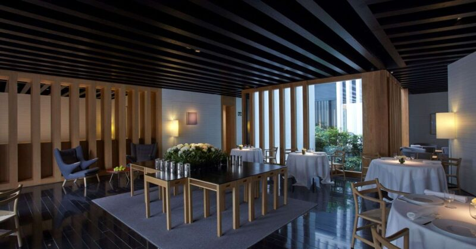
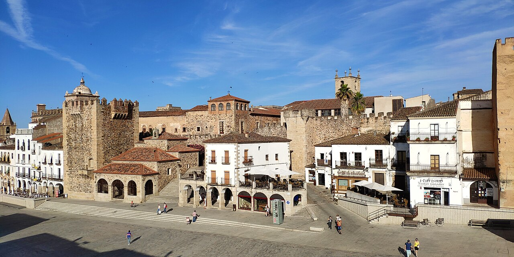

Spain has clustered its finest restaurants around Barcelona and San Sebastián. Atrio is the outlier: a three-Michelin-star table sitting inside a UNESCO-walled medieval quarter in Extremadura, a province most travellers pass through on the way somewhere else. The restaurant holds the only Michelin stars in the city — three of them, confirmed again in the 2026 Guide.[1][2]
Chefs José Polo and Toño Pérez founded the restaurant in 1986, watched it earn two stars and hold them for eighteen years, then saw a third arrive with the 2023 Guide.[5] The tasting menu — €295 per person, VAT included — is a meditation on Extremadura itself: Iberian pork in nearly every one of its 22 courses, produce from the region's dehesas, technique in service of the local table rather than at war with it.[4][6]
"The sommelier navigates 40,000 bottles across 22 countries from a circular cellar — and a wine list printed as a 444-page hardback book."
The wine programme is run by José Luis Paniagua, who received the Michelin Sommelier Award in 2025[9] — the highest individual honour the Guide gives to front-of-house staff. He draws on a cellar of 40,000 bottles from 22 countries, housed in a circular vault designed by Tuñón y Mansilla architects — the same firm behind the Fundación Helga de Alvear expansion next door.[10] Wine pairings are available at €100, €130, or €170 depending on how many pours you choose.[6]
The restaurant sits on Plaza de San Mateo, deep inside the walled quarter. The pre-dinner walk through floodlit medieval lanes — past towers built on Roman foundations, past the Palacio de las Cigüeñas with its stork-crowded battlements — is part of the experience. Arriving at the white facade on the darkened plaza after twenty minutes of walking the old city is the kind of approach no restaurant in a purpose-built dining district can replicate.
Book several weeks in advance. Weekends fill quickly. If timing the trip around the fall tech events below, confirm Atrio availability before committing to conference dates — the Oct 3 EDD26 weekend may compress available tables.
One of Europe's finest contemporary collections — 3,000+ works by Picasso, Kandinsky, Ai Weiwei, Anish Kapoor — in a 2021 Tuñón y Mansilla building inside the walled quarter. The natural afternoon before dinner.[14]
The 12th-century city emblem, raised on Roman ashlars. Climb it for the best panorama over Plaza Mayor and the stork-tower skyline. Ticket includes the Arco de la Estrella and adjacent wall sections.[16]

UNESCO-listed since 1986 for its intact layering of Roman, Moorish, Gothic and Renaissance work behind thirty Islamic-era towers.[15] After 9pm, the same lanes HBO used for Game of Thrones belong to storks and dinner guests.
| Destination | Drive | The draw |
|---|---|---|
| Trujillo | 46 km · 32 min | Renaissance palaces funded by Peruvian silver; Moorish castle; birthplace of Pizarro[17] |
| Mérida | 74 km · 55 min | Best-preserved Roman ensemble in Spain — theatre, amphitheatre, circus (UNESCO)[17] |
| Monfragüe NP | 63 km · 54 min | Europe's premier vulture cliffs — Black vultures, Griffons, Spanish Imperial Eagles[17] |
No worthwhile destination exists within 30 km. Rental car required — ride-share is not realistic for these distances.
3rd Congress on Digital Transformation, AI, Cybersecurity & Robotics at Palacio de Congresos de Cáceres. First edition drew 6,000+ visitors.[20]
400+ attendees, 80% professionals, multi-track. Complejo Cultural San Francisco. The denser peer event of the two.[21]
April–May and mid-September to mid-October are the optimal windows. July and August push 39–40 °C[19] — the cellar stays comfortable but the old-town circuit won't be.
The fall window aligns naturally with Potencial Digital (Sep 24–25, free) and Extremadura Digital Day (Oct 3, €25–40), which turns the dinner into the anchor of a denser trip rather than the only reason for a flight. Confirm Atrio availability before committing to either conference weekend.